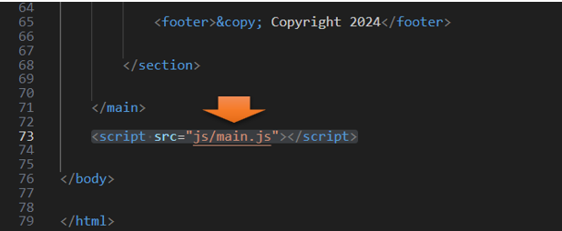

~1 Website Setup~
7/8/2024
Starting to write out the code for the body - Header
Adding the folders to XAMP
Start out by adding a new folder in XAMP
The path below to your folder should look something like this:
In this folder, you want to create a folder. Name this folder dist
A dist folder
Inside of the dist folder you will be adding the img folder,later we will be adding the js, and the html files to this folder. Your scss folder is outside of the dist folder.
The image on the right is showing some of the files that we will be adding latter on in this tutorial series.
Inside the dist folder
You will need 7 images all of this size
Go to Visual Studio Code
Create the index.html
Still inside of the dist folder create your index.html
Using Emmet, we can use the shortcut of
! and Enter
<!DOCTYPE html>
<html lang="en">
<head>
<meta charset="UTF-8">
<meta name="viewport" content="width=device-width, initial-scale=1.0">
<title>Document</title>
</head>
<body>
</body>
</html>
Give your webpage a title
Add your Style sheet
Add your Style sheet, now even though we will be writing our code in SASS, browsers can only interpret CSS, so the link to this page actually needs to be to the CSS page that will be created by SASS. Now even though this has not been created yet, we at least will have a link to it, when it is.
<link rel="stylesheet" href="css/main.css"

Starting to write out the code for the body - Header
We will be starting out with a header tag. To make things easier, we can take the home li and use an Emmet shortcut of:
shift-alt-down arrow
That will duplicate the code and then we can just customize it to work with each page we want to link to.
<header>
<div class="menu-btn">
<span class="menu-btn__burger"></span>
</div>
<nav class="nav">
<ul class="menu-nav">
<li class="menu-nav__item active">
<a href="index.html" class="menu-nav__link">
Home
</a>
</li>
<li class="menu-nav__item">
<a href="about.html" class="menu-nav__link">
About Me
</a>
</li>
<li class="menu-nav__item">
<a href="projects.html" class="menu-nav__link">
My Projects
</a>
</li>
<li class="menu-nav__item">
<a href="contact.html" class="menu-nav__link">
Contact Me
</a>
</li>
</ul>
</nav>
</header>
Body Code Main Section
<main>
<section class="home">
<h2>Welcome to my Portfolio Site</h2>
<h1 class="home__name">My name is: <span class ="home__name—
last">StarsInDust</span></h1>
<h2>
Web Developer, Designer & Programer
</h2>
</section>
</main>
Adding Social Icons
We will be placing these social icons, inside of the same section tag as our <h1> and <h2> tags.
We will be using font awesome for this, and I will show you how to set that up to use that in just one minute.
You will want to wrap each individual social icon in its own a href tag.
<section class="home">
<h2>Welcome to My Portfolio Website</h2>
<h1 class="home__name">StarsInDust</h1>
<h2>
Web Developer, Designer & Programer
</h2>
<div class="social-icons">
<div class="social-icons">
<a href="#!"><i class="fab fa-twitter fa-2x"></i></a>
<a href="#!"> <i class="fab fa-facebook fa-2x"></i></a>
<a href="#!"><i class="fab fa-instagram fa-2x"></i></a>
<a href="#!"><i class="fab fa-github fa-2x"></i></a>
</div>
</div>
</section>
The Footer
This is still going to be within that same <section> tag
<footer>© Copyright 2024</footer>
Set this before the closing </section> tag
We will also attach a JavaScript file, as we will be using that later on. So, we will start out by adding the script tag to this page so the JavaScript file can be found. We have not written the JavaScript code yet, so do not expect things to work as of now.
<script src="js/main.js"></script>
This code will be placed after the </main> closing tag, but before the closing </body> tag

Font Awesome
You will need to sign up for a free account.
Warning, if you just copy my code from my files for your site, you will not see any social media icons. That is because you must sign up, and get your own code. That is the only way, for these little icon images to be visible on your site.
Click on the button that says free
Click the copy button at the end of this script tag
You will want to place that in the code here right above the other script tag, and right before your body tag.

If you test your webpage now, it will look a mess with no styles, but your font awesome icons should be showing up